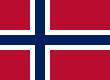
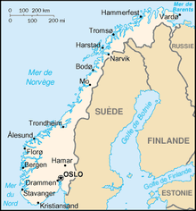

Norvege

To know:
Capital : Oslo
Population (2018) : 5 millions
Form of the State: Constitutional Monarchy
King: Harlad V
Ministre: Jonas Gahr Støre
Parliament: Storting
Official languages: Bokmål, langues sames, nynorsk and norvégien
Cash : Euro
Norvège is a North European Country. Located in the west-northwest of the Scandinavian Peninsula that it shares with Sweden, it also has borders with Finland and Russia to the northeast, and is bordered by the Atlantic Ocean to the west-northwest and southeast, and finally by the Arctic Ocean to the northeast.
I don't know
Many etymologists believe that the name of the country comes from the expression "Northern Way" in several Scandinavian languages.
Religion
Initially, and until the end of the Viking Age, the majority of the inhabitants of present-day Norway worshipped the ancient gods of Norse paganism, as in other Scandinavian countries. At the end of the eleventh century, Norway wasChristianized, paganism and its rites were then banned. The laws against paganism were abolished at the beginning of the twentieth century. There are many traces of Norse paganism in Norway today, especially in place names, the names of the days of the week, and in the language spoken in general.
Part of the Saami minority continued to practice their religion until their conversion to Protestantism in the eighteenth century by Danish-Norwegian missionaries.
There are several neopagan movements in Norway today, the Åsatrufellesskapet Bifrost founded in 1996 and Foreningen Forn Sed in 1999. They have been officially recognized by the Norwegian government as religious societies, which allows them to legally conduct civil ceremonies (such as weddings). Forn Sed has been a member of the World Congress of Ethnic Religions since 2005, they have nearly 400 followers.